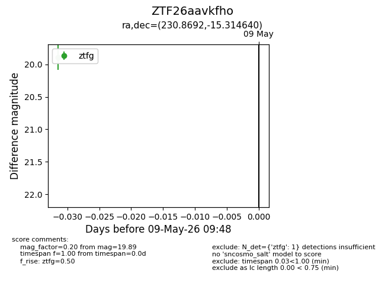
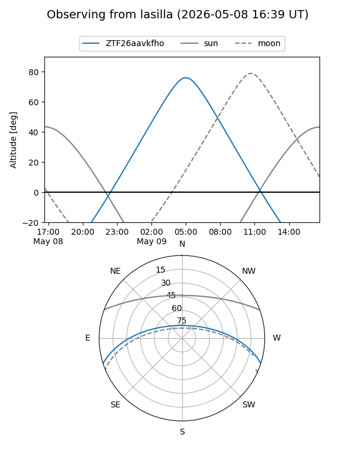
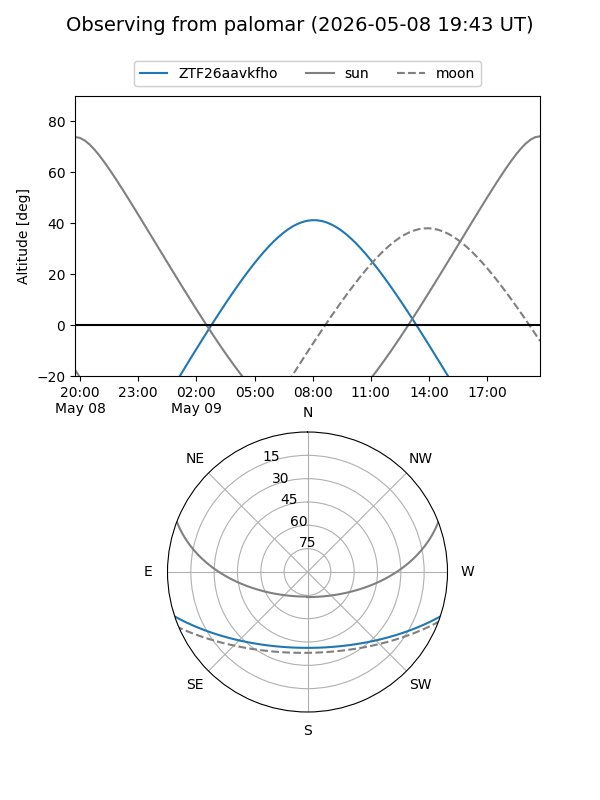

ZTF26aavkfho
Target ZTF26aavkfho at 2026-05-09 09:49
Aliases and brokers:
FINK: link
Lasair: link
ALeRCE: link
alt names
ZTF26aavkfho (ztf,fink_ztf)
Coordinates:
equatorial (ra, dec) = 230.8692,-15.31464
equatorial (HMS+DMS) = 15:23:28.61,-15:18:52.71
galactic (l, b) = (348.5339,+33.77219)
Flags:
Photometry:
last ztfg=19.89
1 ztfg detections
Lightcurve

Visibility


Additional plots